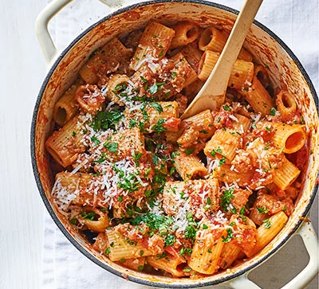

Sausage Pasta

Description
Spicy sausage pasta is a delicious, simple, and quick recipe that you can whip up in no time. It's perfect for a weeknight dinner or a cozy weekend meal.
Ingredients
- Pasta of your choice
- Spicy sausage
- Onion
- Garlic
- Sauce of your choice
- Heavy cream
- Spinach
- Parmesan cheese
- Red pepper
- Salt and pepper
- Oregano
- Olive oil
Steps
- Boil water and cook pasta according to package instructions.
- Heat olive oil in a pan and add the sausage, breaking it up with a spoon.
- Add the onion, garlic, and red pepper flakes. Cook until the sausage is browned and the onion is soft.
- Add the sauce, heavy cream, and oregano. Simmer for a few minutes.
- Add the spinach and cook until wilted.
- Stir in the cooked pasta and Parmesan cheese.
- Season with seasonings to taste.
- Serve hot and enjoy!